Accessibility Across a Product Ecosystem
6 min readTL;DR
I worked on a broad accessibility initiative across product, content and development, focused on making accessibility easier to understand, apply and maintain across different teams.
The work included platform audits, screen reader testing, design system updates, accessibility documentation, and cross-functional collaboration with product, development, legal, editorial and multimedia teams.
The project reinforced a key idea: accessibility is not a final layer added to a product. It depends on structure, content, design decisions, technical implementation and internal processes.
Table of Contents
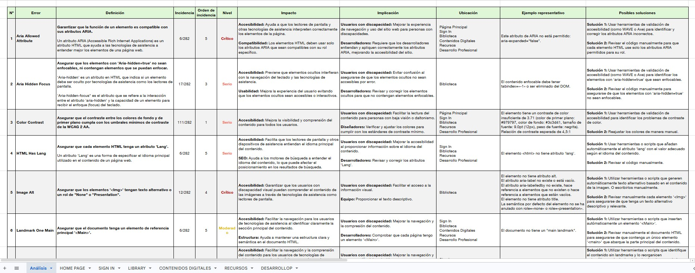
1. Overview
Role: UX/UI Designer
Scope: Accessibility research, audits, documentation, testing and design system support.
Tools: Figma, AXE, Google Lighthouse, NVDA, JAWS, Microsoft Narrator and WCAG references.
This was one of the broadest projects I worked on. Rather than focusing on a single feature or product area, the project looked at how accessibility affects an entire product ecosystem.
The work moved across product interfaces, learning platforms, PDFs, documentation, design system foundations and implementation support.
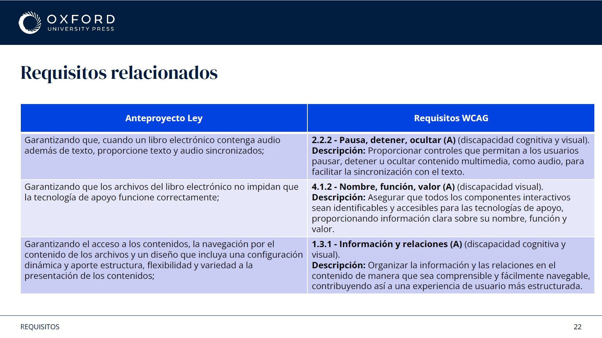
2. Context
A large part of accessibility is invisible to most users, but essential for others. Many barriers are not obvious through visual review alone.
The project required looking at accessibility from multiple perspectives: usability, technical implementation, content structure, legal requirements and day-to-day team workflows.
This made the work especially transversal. Accessibility could not be solved only through interface design. It required shared understanding across teams.
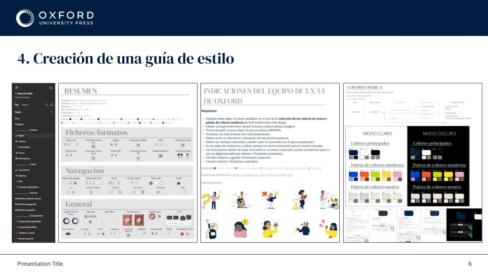

3. Design System
Accessibility was integrated directly into the design system through:
- Contrast validation
- Typography
- Focus states
- Error states
- Labels
- Headings
- Layout structure
The objective was to make accessibility easier to apply consistently, instead of treating it as an isolated review at the end of the process.
Focus states were especially important. They are often overlooked, but they are essential for keyboard navigation and for users who do not navigate with a mouse.
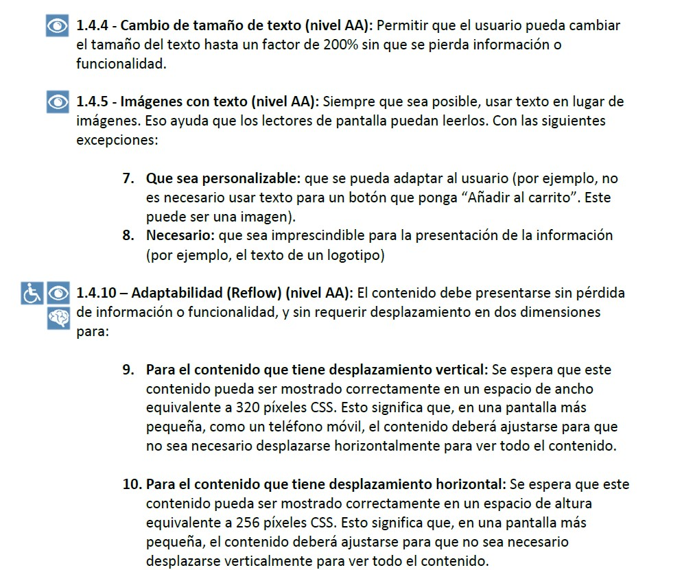
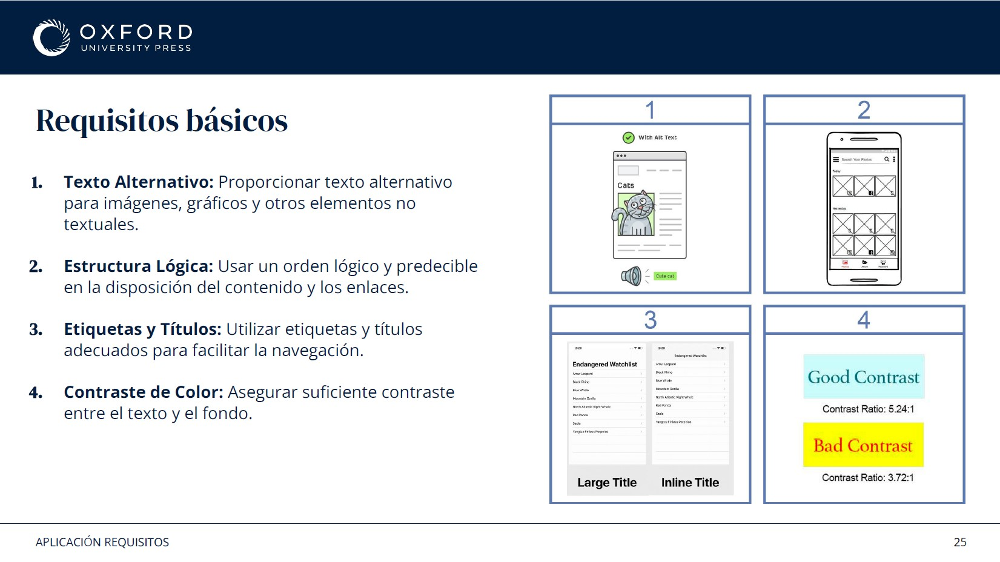
4. Accessibility Report
One of the largest pieces of work was creating a detailed accessibility report. The report covered:
- European Accessibility Act
- WCAG 2.1
- Product requirements
- Accessibility principles
- Implementation implications
The goal was to create a shared reference point before defining solutions.
This helped align conversations around the four accessibility principles: Perceivable, Operable, Understandable and Robust.
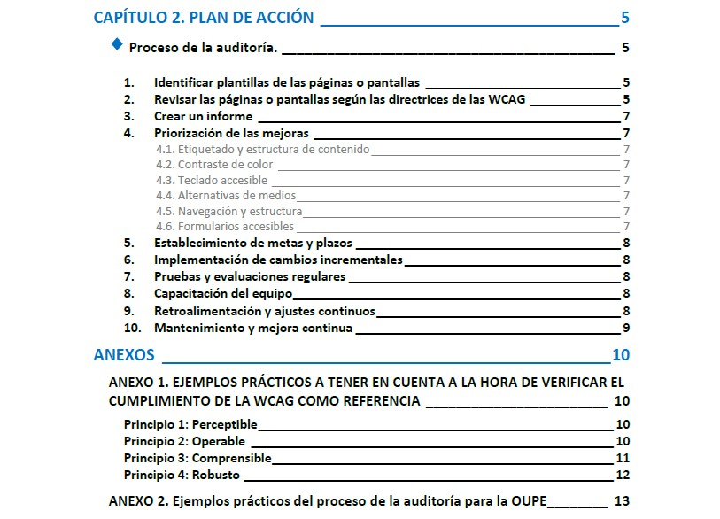
5. Structuring the Process
After defining the requirements, I created an action plan covering:
- Audits
- Issue identification
- Prioritisation
- Validation
- Maintenance
This became the framework used to approach accessibility work across different products and formats.
Not all accessibility issues have the same impact. Some can completely block access to content, while others are mostly usability improvements. Prioritisation mattered.
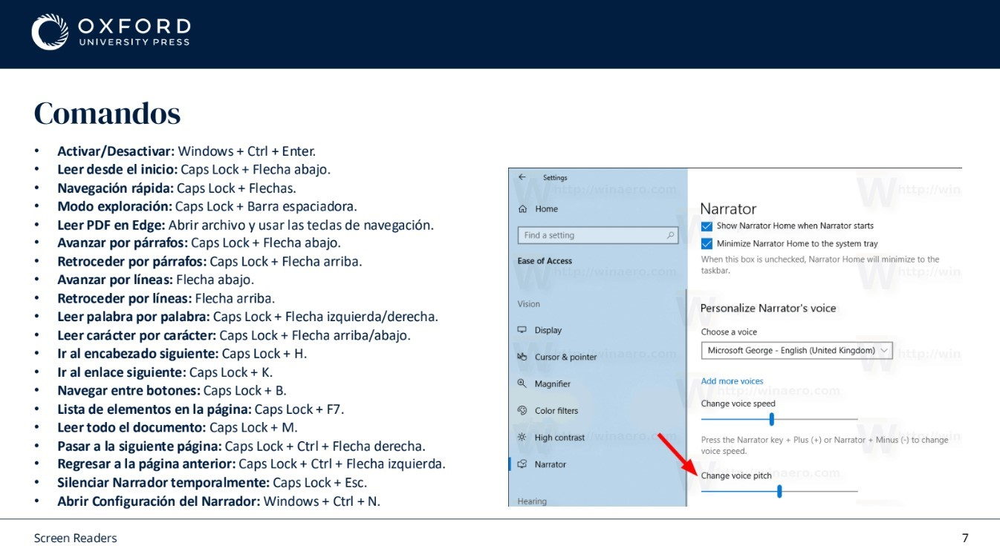
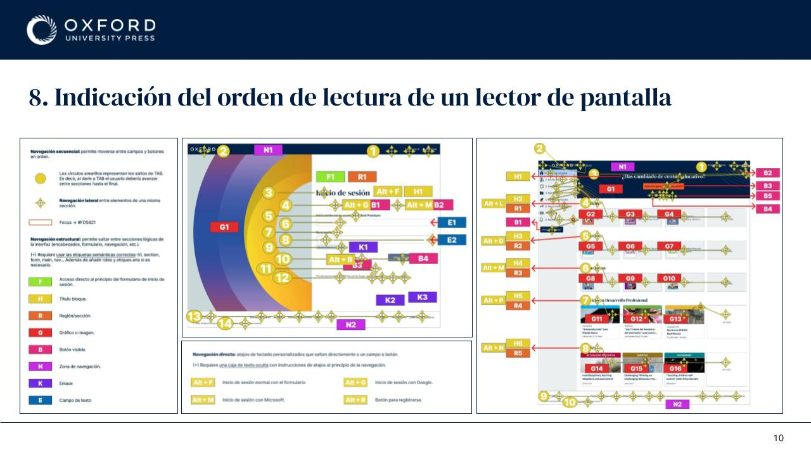
6. Testing with Assistive Technologies
A large part of the project involved testing products using:
- NVDA
- JAWS
- Microsoft Narrator
I documented how each tool behaved and how they interacted with different environments.
Screen readers do not navigate interfaces visually. They navigate headings, buttons, forms, tables and landmarks. That changed how issues needed to be identified and explained.
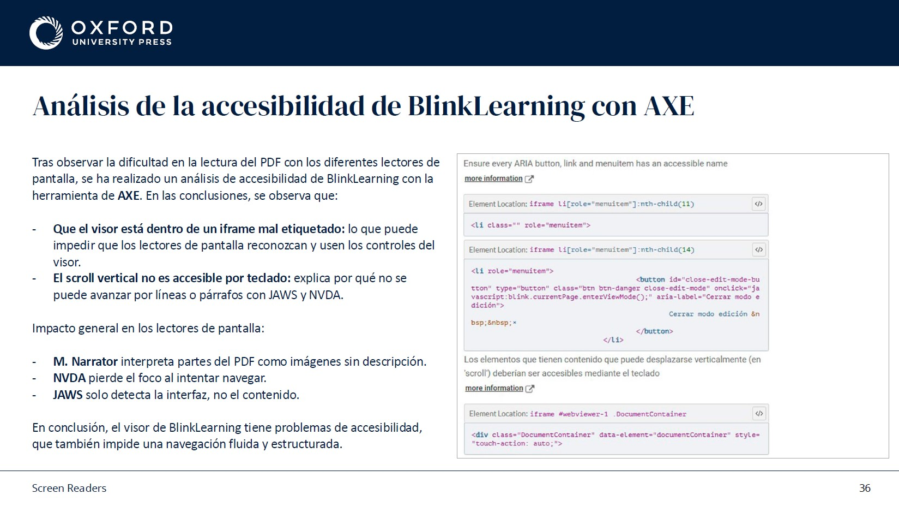
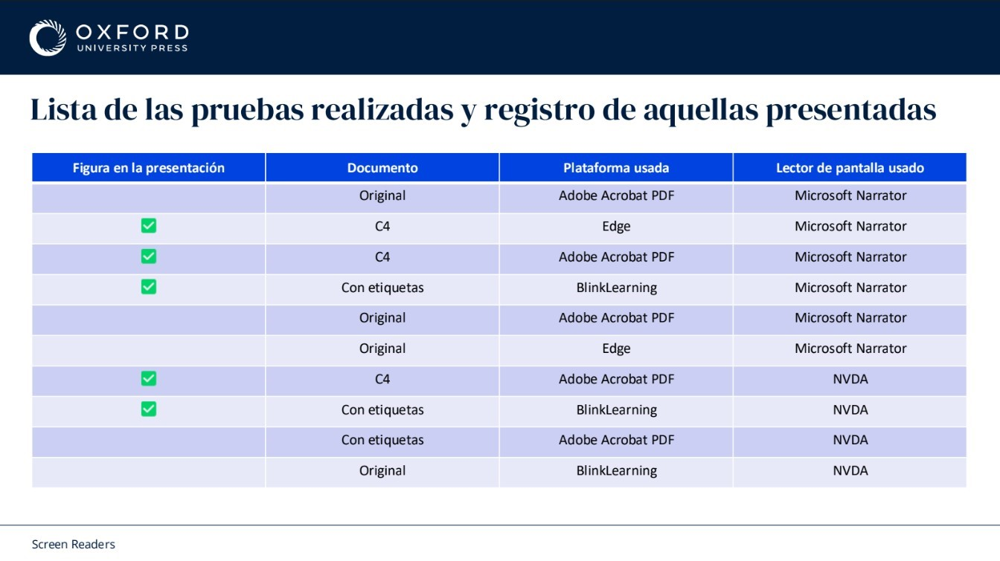
7. Comparing Environments
I tested accessibility across different environments:
- Websites
- PDFs
- Learning platforms
- Tagged PDFs
- Non-tagged PDFs
This helped identify how accessibility behaviour changes depending on the format.
One important finding was that a PDF can contain text, images and headings and still be inaccessible. Reading order, tagging and document structure often determine whether a screen reader can interpret it correctly.
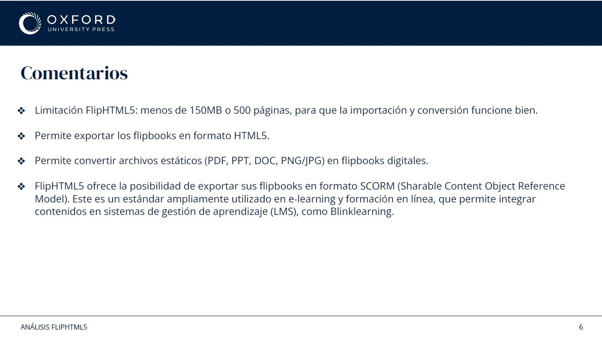
8. Documentation
A significant part of the project involved creating documentation adapted to different teams. This included:
- Accessibility reports
- Action plans
- Editorial guidelines
- Multimedia guidelines
- Image guidelines
- Format-specific recommendations
- Tool research
The objective was to make accessibility easier to apply in day-to-day work.
Most accessibility standards explain what needs to be done. Documentation is often needed to explain how to do it.
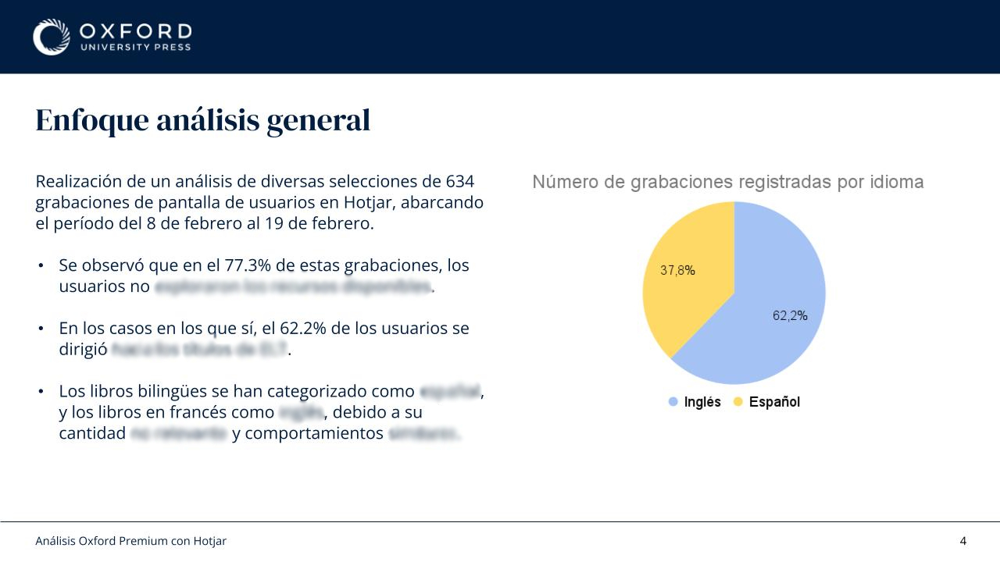
9. Research with Users
I conducted interviews with different types of users. Several themes appeared repeatedly:
- Cognitive load
- Clear organisation
- Predictable navigation
- Easy access to resources
These conversations helped connect accessibility requirements with real classroom use.
Accessibility challenges were often related to understanding and finding information easily and quickly.
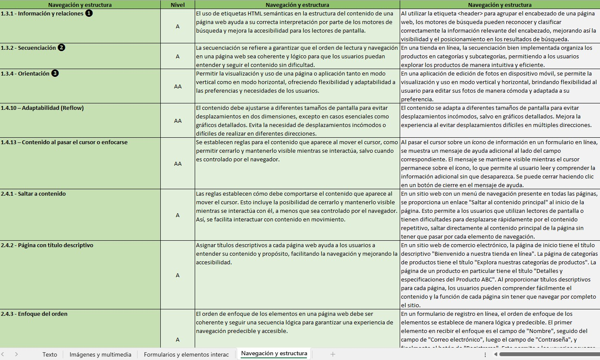
10. Working Across Teams
Accessibility involved regular collaboration with:
- Development
- Product
- Legal
- Editorial
- Multimedia
Many decisions required balancing technical constraints, content requirements and accessibility goals.
Many accessibility issues originate outside design. Content structure, document creation, development decisions and publishing workflows all influence the final experience.
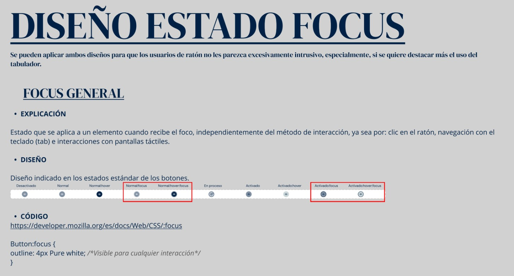
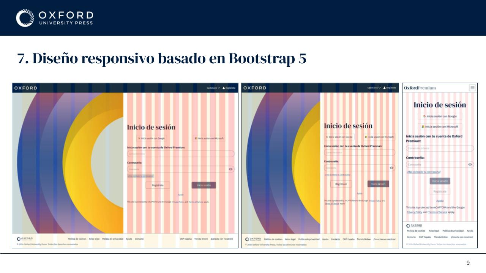
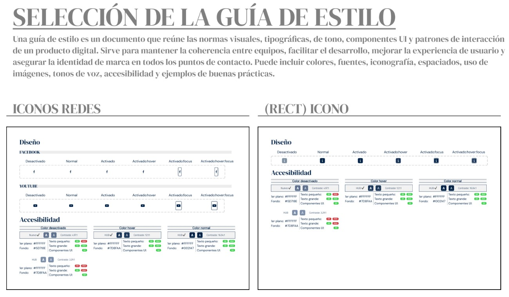
11. Handoff with Development
I worked closely with developers to support implementation through:
- Reusable components
- Bootstrap-based structures
- Spacing rules
- Figma Dev Mode
- Feature documentation
- Regular follow-ups
The goal was to reduce ambiguity and make implementation smoother.
Small implementation differences can have accessibility consequences. Spacing, focus behaviour, component states and semantic structure need to remain consistent from design to development.
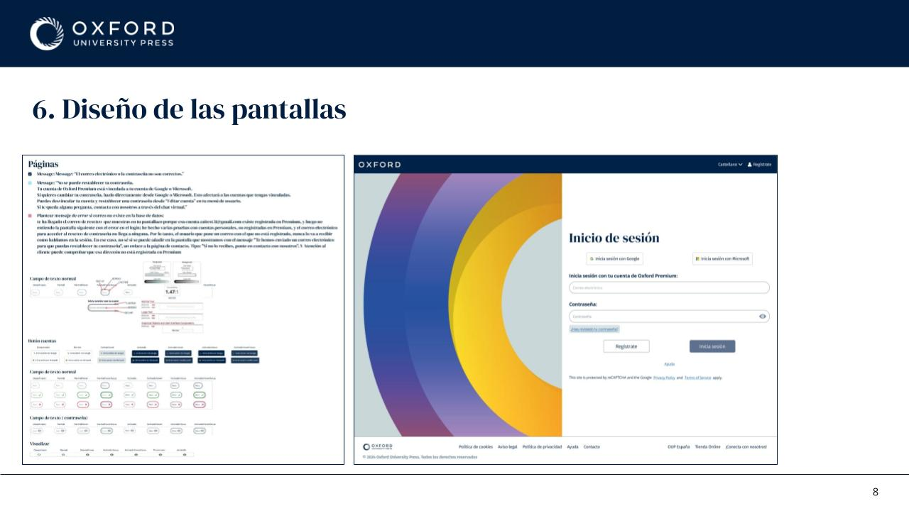
12. Reflection
One of the most interesting parts of this project was discovering how many accessibility issues originate long before development.
Many of the challenges were related to information architecture, content structure, documentation, design decisions and internal processes.
Accessibility is usually measured through compliance, but its impact often appears elsewhere: usability, task completion, user confidence and adoption.
This project is subject to confidentiality agreements, so some internal deliverables, research artefacts, documentation, and design files cannot be publicly shared. The examples shown have been adapted to illustrate my process and contribution while respecting those commitments.
If you'd like to know more about the project or my role, I'd be happy to discuss it during an interview.